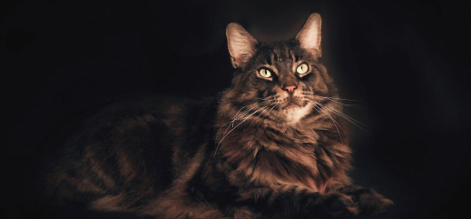
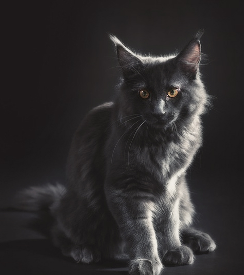

Питомнцы
Все представители нашего питомника имеют ветеринарный паспорт с отметками о прививках и документ с родословной
- Коты
- Кошки
- Котята

- 
- 
Особенности породы
Мейн-Кун - это порода, которая вызывает к себе уважение. Приобретая в свой дом этого питомца, вы получите умное животное, которому нет равных
- Легко уживается в семьях с детьми или другими животными
- Выполняет команды как дрессированная собака
- Внешний вид этой кошки похож на дикую рысьи
- Вес может достигать 12 кг, а длина 1 м
Почему именно мы?
Приобретая животное в нашем питомнике, вы получите
Об уходе за Мейн-Куном
-
Шерсть
Мы разработали 8 правил, следуя которым, шерсть вашего кота всегда будет блестящей, мягкой и послушной
Смотреть подробнее -
Когти
Нужно ли стричь когти? Это мы и выясним, плюс ко всему расскажем как подобрать идеальную когтеточку
Смотреть подробнее -
Уши и глаза
Владельцам котов необходимо регулярно осматривать ушки и глазасвоих питомцев, ведь это может быть признаками заболевания
Смотреть подробнее -
Питание
В нашем питомнике существует два подхода: натуральное питание и питание промышленными кормами, но выбирать только вам
Смотреть подробнее
Наша команда
Все сотрудники нашего питомника дипломированые специалисты в области фелинологии и ветеринарии

Вопрос-Ответ
Мы ответим на самые популярные ваши вопросы
-
С какого возраста можно забирать котенка из питомника?
Есть важная причина, почему котенка стоит забирать домой только после трех месяцев, — это вакцинация. Первые прививки животному делают в возрасте 8 недель. Ревакцинация проводится через 3–4 недели. То есть котенок, покидающий дом позднее 12 недель, максимально защищен от различных вирусов и инфекций.
Так что, чтобы в дома появился психически и физически здоровый котенок, игривый, жизнерадостный, самостоятельный и воспитанный, не спешите забирать его от кошки-мамы раньше трех месяцев.
-
Как зарезервировать котенка?
Есть важная причина, почему котенка стоит забирать домой только после трех месяцев, — это вакцинация. Первые прививки животному делают в возрасте 8 недель. Ревакцинация проводится через 3–4 недели. То есть котенок, покидающий дом позднее 12 недель, максимально защищен от различных вирусов и инфекций.
Так что, чтобы в дома появился психически и физически здоровый котенок, игривый, жизнерадостный, самостоятельный и воспитанный, не спешите забирать его от кошки-мамы раньше трех месяцев.
-
Можно ли купить кота, если я живу в другом городе?
Есть важная причина, почему котенка стоит забирать домой только после трех месяцев, — это вакцинация. Первые прививки животному делают в возрасте 8 недель. Ревакцинация проводится через 3–4 недели. То есть котенок, покидающий дом позднее 12 недель, максимально защищен от различных вирусов и инфекций.
Так что, чтобы в дома появился психически и физически здоровый котенок, игривый, жизнерадостный, самостоятельный и воспитанный, не спешите забирать его от кошки-мамы раньше трех месяцев.
-
Как подготовить дом к приему нового питомца?
Есть важная причина, почему котенка стоит забирать домой только после трех месяцев, — это вакцинация. Первые прививки животному делают в возрасте 8 недель. Ревакцинация проводится через 3–4 недели. То есть котенок, покидающий дом позднее 12 недель, максимально защищен от различных вирусов и инфекций.
Так что, чтобы в дома появился психически и физически здоровый котенок, игривый, жизнерадостный, самостоятельный и воспитанный, не спешите забирать его от кошки-мамы раньше трех месяцев.
Отзывы
-

Серёжа Попов
24 мая 2018